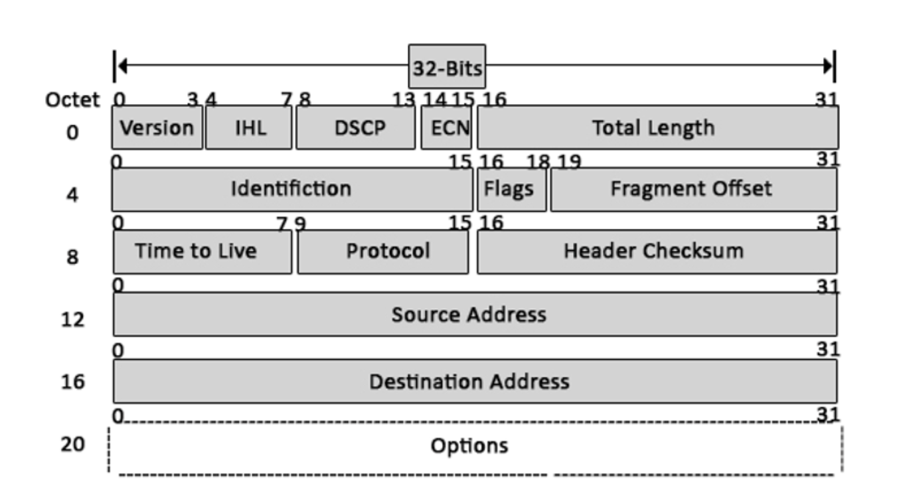

1.4 IPv4 Headers
IPv4 headers are made up of these fields:
-
Version [4 bits]
- Identifies the version used, either IPv4 or IPv6.
- IPv4 would have a value of 4 [0100]
- IPv6 would have a value of 6 [0110]
-
IHL "Internet Header Length" [4 bits]
- The final field of the IPv4 header (the options field) is variable in length, so this field is necessary to indicate the total length of the header.
- It identifies the length of the header in 4 byte increments.
Eg: If the value was 5 → 5×4 = 20 bytes (length of the header is 20 bytes)
- The minimum value of this field is 5 [0101], which is an IP header without an options field.
- The maximum value is 15 [1111], so the length of the header would be 60 bytes.
-
DSCP "Differentiated Services Code Point" [6 bits]
- Used for QoS "Quality of Service"
- Used to prioritize sensitive data (streaming voice, video etc)
-
ECN "Explicit Congestion Notification" [2 bits]
- Provides a way to signal that the network is congested without dropping packets.
-
Total Length [16 bits]
- Indicates the total length of the packet (including the L3 header and L4 segment)
- Unlike the IHL field, this field indicates the value in bytes.
Eg: the value is 100 → total length is 100 bytes.
- Minimum value is 20 (an IPv4 Header with no encapsulated data)
- Maximum value is 65,535 (1111111111111111)
- The IHL field indicates the length of the HEADER, while this field indicates the length of the HEADER + THE DATA INSIDE OF IT (the segment).
-
Identification [16 bits]
- If the packet gets fragmented due to being too large, this field is used to identify which packet the fragment belongs to so that they can be reassembled later.
- All fragments of the same packet will have the same value in this field.
- Packets are fragmented if they're larger than the MTU "Maximum Transmission Unit", which is usually 1500 bytes.
-
FLAGS [3 bits]
- Used to control/identify fragments.
- First bit → always 0
- Second bit → if it was 1, the packet shouldn't be fragmented ("Don't fragment" DF bit)
- Third bit → if it was 1, there are more fragments ("More fragments" MF bit). And it is set to 0 for the last fragment.
-
Fragment Offset [13 bits]
- Used to indicate the position of the fragment within the original unfragmented packet.
- It allows fragmented packets to be correctly reassembled even if they arrive out of order.
-
TTL "Time To Live" [8 bits]
- It is used to prevent infinite loops; if a packet happened to get continuously sent around in a loop (because of some poor routing configuration), this might cause congestion and eventually failure if many packets accumulate.
- Routers will drop packets with a TTL of 0.
- The TTL value shows how many hops till the packet gets dropped, and each time the packet arrives to a router, the router will decrease the packet's TTL by 1.
- The current recommended TTL is 64.
-
Protocol [8 bits]
- Used to indicate the protocol of the encapsulated segment (layer 4 PDU).
- Value of 6 → TCP
- Value of 17 → UDP
- Value of 1 → ICMP
- Value of 89 → OSPF "Open Shortest Path First"
-
Header Checksum [16 bits]
- A calculated checksum used to check for errors in the IPv4 header.
- When a router receives a packet, it calculates the checksum of the header and compares it to the one in this field.
- If the numbers don't match, the router drops the packet because an error has occurred in transmission.
- Note that this is used to check errors only in the IPv4 HEADER, and not in the encapsulated data. TCP and UDP have their own checksums to detect errors in the encapsulated data.
- Source IP Address [32 bits]
- Destination IP Address [32 bits]
-
Options
- It is rarely used.
- It has a length of 0 - 320 bits
- It is present if the IHL value was more than 5.

Previous
Next